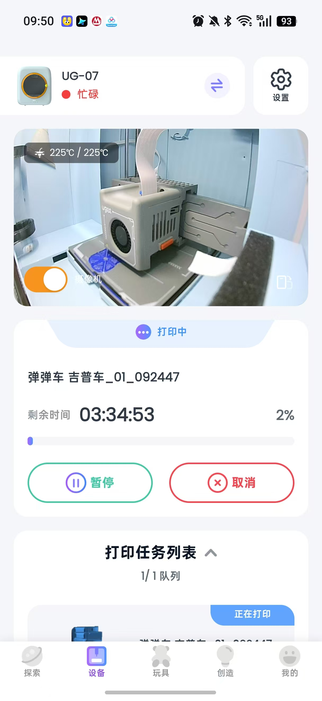
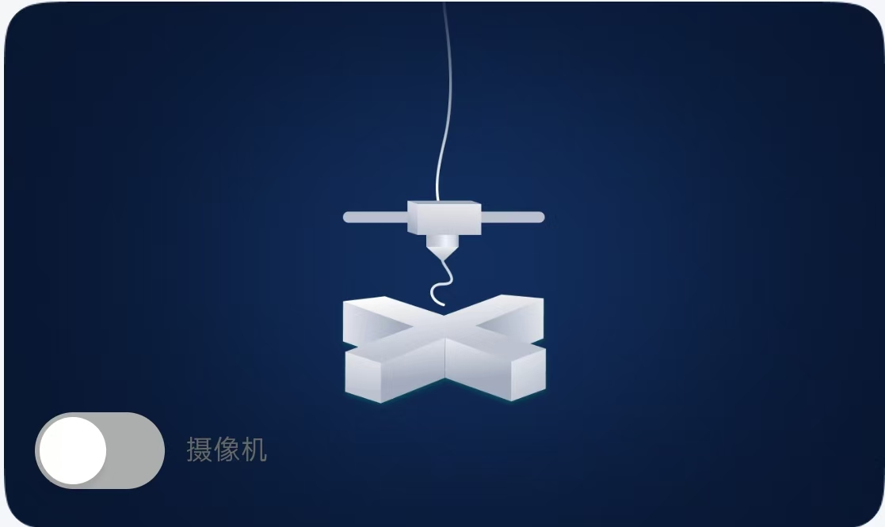
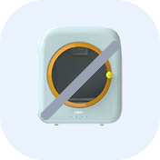
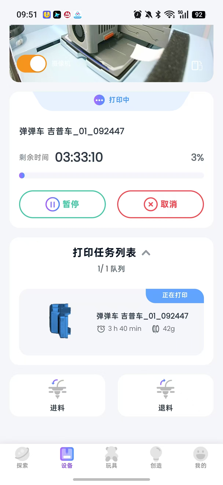
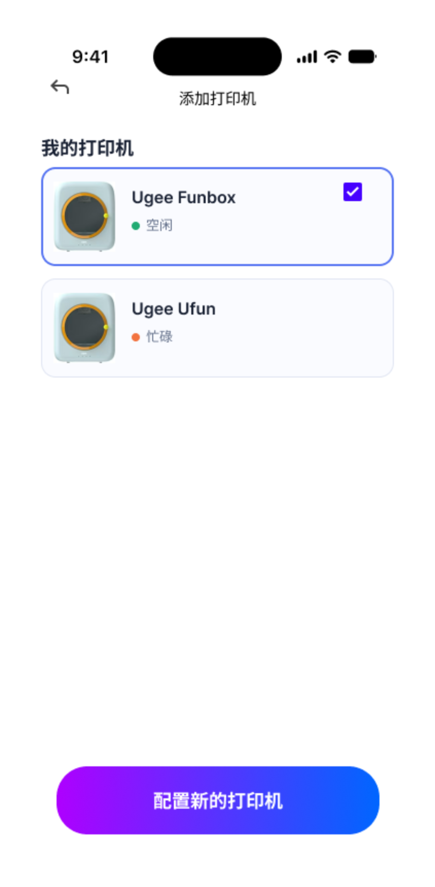
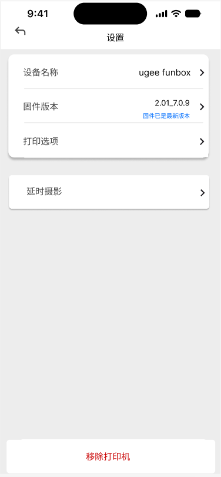

当前打印机处于离线状态，请重新连接打印机。
如果打印机已开机但无网络，可使用无网打印



恢复出厂将清空打印机 WiFi、本地模型、设备参数，清除所有账号绑定与设备打印队列。打印机将进入待配网状态。
⚠️此操作不可撤销，所有家庭成员均无法继续使用设备，需重新绑定。
解绑仅解除本账号与打印机绑定，不会重置设备。将清空此打印机的打印队列；打印机 WiFi、本地文件保留，其他家庭成员无法继续使用。解绑后可重新进行连接绑定。
⚠️如需清空设备文件，请执行恢复出厂设置。
点击「确认」后需要先判断：当前账号是否还连接着其他打印机。
IF已有其他打印机直接回到打印页，自动连接「我的打印机」列表里的第一台（Ugee Funbox）
ELSE没有其他打印机跳转到「打印机首次配网连接流程」原型首页，重新开始配网